Software-defined orchestration for dynamic networks
We build intelligent orchestration software that unlocks simpler, more efficient and more scalable network management for dynamic networks.
Get in touchThe problem
Dynamic networks such as satellite constellations are growing larger, orbiting closer to Earth and linking across layers: to satellites in other orbits, to UAVs and to aircraft. Traditional management tools are inefficient and too specialised to scale.
The network dynamics are extreme. A LEO satellite travels at roughly 7.5 km/s through a mesh of thousands of links that reach other LEO satellites, drones, aircraft and satellites in different orbits. The topology never stops changing, and classical methods under-perform under these conditions.
Performance requirements are rising. For 5G and beyond, next-generation non-terrestrial networks target an order-of-magnitude gain over today’s performance requirements.
Our solution
An intelligent orchestration layer that predicts optimal decisions over time, instead of reacting to events after they have already happened.
- Continuous network monitoringThe state of the network, links, traffic, resources, is observed continuously and in a unified way.
- Prediction of future network statesThe system anticipates how the network will evolve, enabling proactive rather than corrective decisions.
- Optimal orchestration decisionsRe-routing when a link breaks, resource allocation to guarantee quality of service, and selective shutdown of resources to save energy are just a subset of possible use cases.
What makes it innovative
Our activity at Laniakea is centred on the research and development of proprietary predictive orchestration algorithms for networks in motion.
From reactive to predictive
Current tools react to network events. Our approach anticipates them, reducing the impact of failures and congestion before they occur.
Software-defined and hardware-agnostic
The orchestration layer is decoupled from the space segment and can run both on-ground and on-board.
Extendible to NTN standards
Designed to be compliant with 5G/6G non-terrestrial network protocols: scalable and flexible for real systems.
Beyond satellites
The same technology applies to any kind of moving network, including drones and airborne platforms.
Look at what we do: white papers
A fast and open-source Physical-Optics implementation for AFR/SFPB reflector antennas — our latest technical publication.
Download the white paper (PDF)Our team
Our team brings together hands-on experience in space telecommunications and a research background in physics and computer science, alongside direct experience of building and leading a technology company.
We have spent years inside the space telecom industry working with and for leading European players, where we led R&D activities on software simulators for satellite constellations and satellite systems, and developed intelligent solutions for network optimisation and automation. That is the operational grounding behind Laniakea: we have built, validated and used these tools on real constellation problems, not only modelled them.

Contact
Get in touch to discuss your current issues or for demos, partnerships and research projects.
For developers: browse our open-source repositories on GitHub.